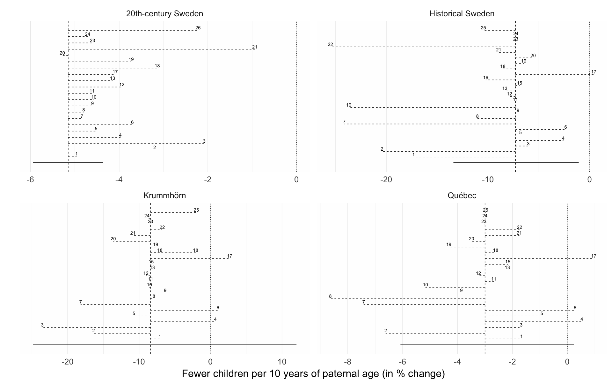

source("0__helpers.R")
library(brms)
opts_chunk$set(warning=FALSE, cache=F,cache.lazy=F,tidy=FALSE,autodep=TRUE,dev=c('png','pdf'),fig.width=20,fig.height=12.5,out.width='1440px',out.height='900px')Here we show the effect size estimates for paternal age in different robustness analyses.
paths = c("coefs/krmh/m3_children_linear.rds",
"coefs/rpqa/m3_children_linear.rds",
"coefs/ddb/m3_children_linear.rds",
"coefs/swed/m3_children_linear.rds",
list.files("coefs", full.names = TRUE, pattern = "^r.+rds$", recursive = T))
filenames = c("/r0","/r0","/r0","/r0",
list.files("coefs", full.names = TRUE, pattern = "^r.+rds$", recursive = T))
i=1
effect_estimates = data.frame()
models = list()
for (i in seq_along(paths)) {
filename = filenames[i]
model = readRDS(paths[i])
if (class(model) == "brmsfit") {
models[[filename]] = model
chg = paternal_age_10y_effect(model)[3,]
chg$model = filename
chg$robustness_analysis = as.numeric(str_match(filename, "/r(\\d+)")[,2])
chg$population = str_match(paths[i], "\\w+/(\\w+)/")[,2]
effect_estimates = rbind(chg, effect_estimates)
}
}
effect_estimates$median_estimate = as.numeric(effect_estimates$median_estimate)
effect_estimates = effect_estimates %>% arrange(robustness_analysis)
pops = c("krmh", "rpqa", "ddb", "swed")
effect_estimates$upper95 = effect_estimates$lower95 = NA
for(i in seq_along(pops)) {
pop = pops[i]
effs = effect_estimates[which(effect_estimates$population == pop), ]
effs$lower95 = effs$median_estimate[1]
effs$upper95 = effs$median_estimate
effs$lower95[1] = as.numeric(str_match(effs$ci_95[1], "\\[(-?[0-9.]+);")[,2])
effs$upper95[1] = as.numeric(str_match(effs$ci_95[1], ";(-?[0-9.]+)]")[,2])
effect_estimates[effect_estimates$population == pop, ] = effs
}
pops = c("krmh"='Krummhörn', "rpqa" = 'Québec', "ddb" = 'Historical Sweden', "swed" = '20th-century Sweden')
effect_estimates$population = pops[effect_estimates$population]In reference to m3, the main reported model, the robustness models were implemented as follows: r1 relaxed exclusion criteria (not in 20th-century Sweden), r2 had only birth cohort as a covariate, r3 adjusted for birth order as a continuous variable, r4 adjusted for number of dependent siblings instead of birth order, r5 interacted birth order with number of siblings, r6 did not adjust for birth order, r7 adjusted only for parental loss in the first 5 years, r8 adjusted for being the first-/last-born adult son, r9 adjusted for a continuous nonlinear thin-splate spline for birth year instead of 5-year bins, r10 added a group-level slope for paternal age, r11 included separate group-level effects for each parent instead of one per marriage, r12 added a moderation by anchor sex, r13 adjusted for paternal age at first birth, r14 compared a model with linear group fixed effects, r15 added a moderator by region and group-level effects by church parish (not in 20th-century Sweden), r16 was restricted to Skellefteå (only in historical Sweden), r17 simulated Down syndrome cases, r18 reversed hurdle Poisson and Poisson distribution for the respective populations, r19 used a normal distribution, r20 did not adjust for maternal age, r21 adjusted for maternal age as a continuous variable, r22 relaxed exclusion criteria and included 30 more years of birth cohorts, allowing for more potential censoring, r23 used Student’s t distributions for population-level priors and half-Cauchy priors for the family variance component, r24 used noninformative priors, which should lead to results comparable with maximum likelihood, r25 controlled for migration status (not in 20th-century Sweden).
robustness_comparison = ggplot(effect_estimates, aes(x = factor(robustness_analysis), y = median_estimate, ymin = lower95, ymax = upper95)) +
geom_hline(aes(yintercept = ifelse(robustness_analysis == 0, median_estimate, NA)), linetype = 'dashed') +
geom_linerange(aes(linetype = robustness_analysis == 0)) +
geom_text(aes(label = ifelse(robustness_analysis == 0, NA, robustness_analysis), group = effect), vjust = -0.3) +
scale_linetype_manual(values = c("FALSE" = 'dashed', "TRUE" = 'solid'), guide = F) +
facet_wrap(~ population, scales = "free", nrow = 2, ncol = 2) +
scale_x_discrete("", expand = c(0.07,0.07)) +
scale_y_continuous("Paternal age effect within family") +
theme(axis.ticks.y = element_blank(), axis.text.y = element_blank(), ) +
coord_flip()
robustness_comparison
matches = str_match(effect_estimates$model, "coefs/([a-z]+)/([a-z0-9_]+)\\.rds")
effect_estimates = effect_estimates %>% mutate(
link = paste0("<a href='",matches[,2],"_robustness.html#",matches[,3],"'>",matches[,3],"</a>"),
link = ifelse(model == "/r0", "m3_main_model",link),
population = factor(population)
)
# effect_estimates$model = recode(effect_estimates$model, "/r0" = "m3_main_model")
DT::datatable(effect_estimates %>% select(population, link, median_estimate, ci_95),
filter = 'top', escape = c(1,3,4), options = list(
pageLength = 50, autoWidth = TRUE
), rownames = F)ggsave(plot = robustness_comparison, "../paternal_age_fitness/library/robustness_comparison.png", width = 17.8, height = 17.8*0.625)
ggsave(plot = robustness_comparison, "../paternal_age_fitness/library/robustness_comparison.pdf", width = 17.8, height = 17.8*0.625, scale = 3, device = pdf, units = "cm", dpi = 600)